第 25 章 テスト駆動開発のパターン¶
- どうやってテストを行うかについて考える前に、以下のようなそもそもの疑問を解消しておく必要がある
- 「テストする」とはどのような意味か
- いつテストするか
- テスト対象のロジックをどう選ぶか
- テストデータをどう選ぶか
テスト（名詞）¶
- テストは「評価する」という意味の動詞である
- 何かしらの変更をしたら、どんな些細な変更であろうが、何かしらのテストをするだろう
- 変更をテストするのとは別に、テストが「ある」というのは大きな意味がある
- テストは名詞でもあり、「合格か不合格かを判定する手順」を意味する
- 名詞のテストは「自動的に実行されるテスト」、動詞のテストは「ボタンを適当に推して画面を見てみる」というような感覚的な違いがある
-
以下に、テストの実行とストレスレベルの関係を表す因果ループを示す

- ノードからノードへの矢印は、始点ノードの増加が終点ノードの増加を示す
- ただし、〇のついた矢印は、始点ノードの増加が終点ノードの減少を示す
- つまり、ストレスレベルが増加した時、テストを行う頻度が減り、テストを行う頻度が減ると、更にストレスが増加する
- 完全な悪循環に陥る
- この悪循環のループを抜け出すために、「テスト」を「自動テスト」に変更する
- 自動テストがあれば、ストレスを感じた時にすぐにテストを走らせることができる
- テストをすぐに走らせれば、ミスをする確率が減っている実感が得られ、結果的にストレスが減っていくだろう
- 当然上記のように必ずうまくいくとは限らない
- 「テストなんかしている時間はない、とにかくリリースしろ！」というようなストレスレベルが極端に高い状況ではサイクルが作用しない
- それでも、自動テストがあれば不安の度合いを制御するチャンスがある
-
失敗すると分かり切っている時に、それでもテストを実行する意味はあるだろうか
- 確認したい内容を正しく反映したテストを走らせてみると、実は成功する場合もある
- 自動テストがあればすぐに確認することもできる
独立したテスト¶
- テストの実行は他のテストに一切影響を及ぼすべきではない
- 著者は初めて出会った自動テストは、実行に長い時間がかかる GUI ベースのテストだった
- 夜中にテストを走らせ、次の日にレポートが出力される形式だった
- 何かのエラーが出ると、レポートは大量に出力されており、1 日をかけて対処する必要があった
- しかし、多くの場合において、それはテストの途中で失敗した結果、その後の全てのテストが失敗している結果だった
- テストの速度を早くし、自動で頻繁に走らせられるようにすることと、独立したテストが非常に重要なことを学んだ経験である
- テストが 1 つ失敗したら、問題は 1 つであるべきであるし、2 つ失敗したら問題は 2 つであるべきである
- テストが互いに独立しているならテストは実行順序に依存しなくなる
- その結果、必要なテストだけを選んでテストすることが可能になり、よりテスト実行時間を短くできる
- テストを独立させるには、意識的に、時にはかなり努力して、問題を小さく直行した問題に分割しなければならない
- 独立したテストを心がけると、凝集度が高く、結合度が低い小さなオブジェクトたちを沢山組み合わせた実装となる
- これはドメイン駆動設計にも通じる保守性の高いコードを実装することにもつながる
TODO リスト¶
- 「何をテストするべきか」を着手する前に、必要になりそうなテストをリストにまとめておく事を推奨する
- リストに加えるのは実装したいものに対するテスト、ということになる
- まず、実装しなければならない振る舞いを考えられるだけ書き出しておく
- 次に、まだ実装がない操作に関して、空実装をリストに加える
- 最後に、今書いたばかりのコードをきれいにするリファクタリングをすべて書き出しておく
- リストに書き出すのではなく、テストコードを一気に全部書き出すのは以下 2 点から推奨しない
- すでに書かれているテストというのはリファクタリング時にある種の慣性を伴う
- 例えば、関数の引数が変更になった場合、あらゆるテストコードに反映しなければなる可能性がある
- また、TDD ではテストが成功している状態を維持しながら変更を加えていきたい
- 沢山のテストコードを書いてしまうと、テストが通るまでの距離が非常に遠くなってしまう
- すでに書かれているテストというのはリファクタリング時にある種の慣性を伴う
- 大きな変更で、目の前のスコープに収まらないようなリファクタリングは、「後でやる」リストに加える
- ただし、テストコードは「後でやる」に入れてはいけない
- テスト自体は、それを通すことはリリースするより重要だからだ
テストファースト¶
- プロダクトコードを実装する前に、まずテストコードを実装するべきだ
- 先ほどの因果ループを例に考えてみる
- テストを先に書くというルールを課してみると、悪循環から抜け出すことができる
- テストが先に存在する(増加)ので、ストレスが減少する
- ストレスが減少するため、更にテストを実装する事ができる
- テストを先に書くというルールを課してみると、悪循環から抜け出すことができる
アサートファースト¶
- テストコードを書く上では、まずアサーションから書くことを推奨する
- システム構築は、システム構築が終わったらこうなる、というストーリーから始める
- プロダクトコードは、コードが書き終わったらこのように動くというテストを書くところから始める
- 同じように、テストコードは、テストの終わりにパスすべきアサーションを書くところから始めるべきである
-
テストをアサートファーストで書いてみると、テストをシンプルにする強力な効果があることに気が付く
- テストを書いてるときに、たとえ実装のことを考える必要がなくとも、複数の問題を一度に解こうとしていることが多い
- 機能はどこに属するべきだろうか。既存メソッドの修正、既存クラスへのメソッド追加、など
- 名前付けをどうするべきか
- 結果の正しさをどう検証するべきか
- そもそも正しい結果とは何であるか
- このテストから想起される新たなテストはないだろうか
-
複数の問題を一度に解決するのは非常に難しい
- 上記リストから、まず以下の 2 つの問題を他の問題達から切り離してみる
- 正しい結果とは何か
- それをどう検証するか
- 例えば、ソケットで外部システムと通信するシステムを考えてみる
- 観点は「ソケットが閉じられること」と、「文字列 abc が読めること」である
1 2
assertTrue(reader.isClosed()); assertEquals("abc", reply.contents());- 応答は当然、ソケットから受け取るはずである
1 2 3
Buffer reply = reader.contents(); assertTrue(reader.isClosed()); assertEquals("abc", reply.contents());- サーバと接続してソケットを作成する
1 2 3 4
Socket reader = new Socket("localhost", defaultPort()); Buffer reply = reader.contents(); assertTrue(reader.isClosed()); assertEquals("abc", reply.contents());- その前にそもそもサーバを準備しておく必要がある
1 2 3 4 5
Socket writer = new Server(defaultPort(), "abc"); Socket reader = new Socket("localhost", defaultPort()); Buffer reply = reader.contents(); assertTrue(reader.isClosed()); assertEquals("abc", reply.contents()); - 上記リストから、まず以下の 2 つの問題を他の問題達から切り離してみる
-
以上のような例のように、アサーションからテストを書いていくと、より明白にシンプルなテストが実装される
- テストを書いてるときに、たとえ実装のことを考える必要がなくとも、複数の問題を一度に解こうとしていることが多い
テストデータ¶
- テストデータは読みやすく、理解しやすくなるデータを使うべきである
- テストには読み手がいる事を心がけよう
- データを散らかすだけ散らかしてそのままにしてはならない
- テストデータのテクニックとして、以下 2 つを紹介する
- 1 つ目は、同じ値は 1 つのものを表すためだけに使う
- plus メソッドのテストを書いているとする
- 「2 + 2」 のテストをする
- もし実装の側で引数の順番が逆であった時、このテストでは検知できない
- 「2 + 3」 のテストとしたほうが良い（足し算の場合は引数の順番に影響はないが）
- plus メソッドのテストを書いているとする
- 2 つ目は「本物に近いデータ」である
- 実際に使われているデータをテストに使用することで、以下のような状況で力を発揮する
- 外部危機からのイベントを収集して解析するリアルタイムシステムのテスト
- 新システムの出力が旧システムの出力内容と一致するかどうかのテスト
- シミュレーションシステムのリファクタリング後に、結果が以前の結果と正確に（浮動小数点の扱いなど）一致する事のテスト
- 実際に使われているデータをテストに使用することで、以下のような状況で力を発揮する
- 1 つ目は、同じ値は 1 つのものを表すためだけに使う
明示的なデータ¶
- テスト結果とその期待値をテスト自身に含め、それらの関係が明快に分かるようにすることを推奨する
- テストには読み手がいる。10 年後にテストを読んだ人にも伝わるように意図を明白にすべきである
-
事例から解説を行う
- 外貨両替に手数料が 1.5%かかるとする。USD から GBP への為替レートが 2:1 の時に、$100 を両替すると、計算結果として 49.25GBP が手に入る
- 以下に 2 パターンのテストを記載する
1 2 3 4 5
Bank bank = new Bank(); bank.addRate("USD", "GBP", STANDARD_RATE); bank.commission(STANDARD_COMMISSSION); Money result = bank.convert(new Note(100, "USD"), "GBP"); assertEquals(new Note(49.25, "GBP"), result);1 2 3 4 5
Bank bank = new Bank(); bank.addRate("USD", "GBP", 2); bank.commission(0.015); Money result = bank.convert(new Note(100, "USD"), "GBP"); assertEquals(new Note(100 / 2 * (1- 0.015) , "GBP"), result);- 後者の方が、入力に使われた数字解きたい値の計算に使われた数字の関係が読み取れる
- コードにマジックナンバーを記載するのは、直観的にご法度である
- しかし、テストコードにおいては、メソッド内で共通の変数以外は明示しておく方が推奨される